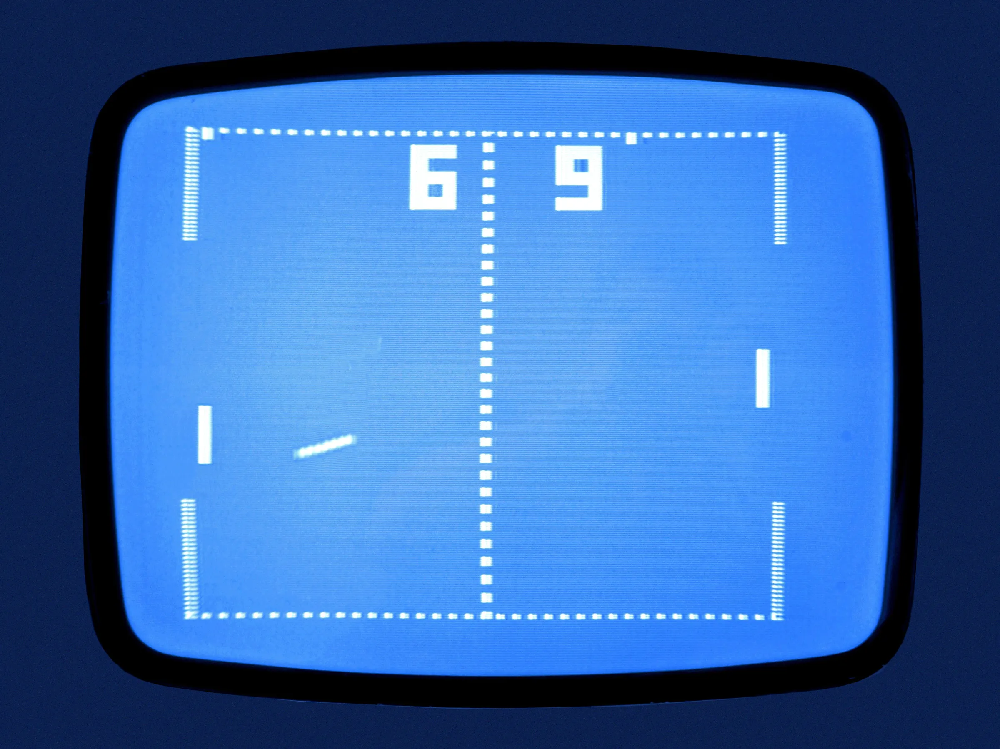
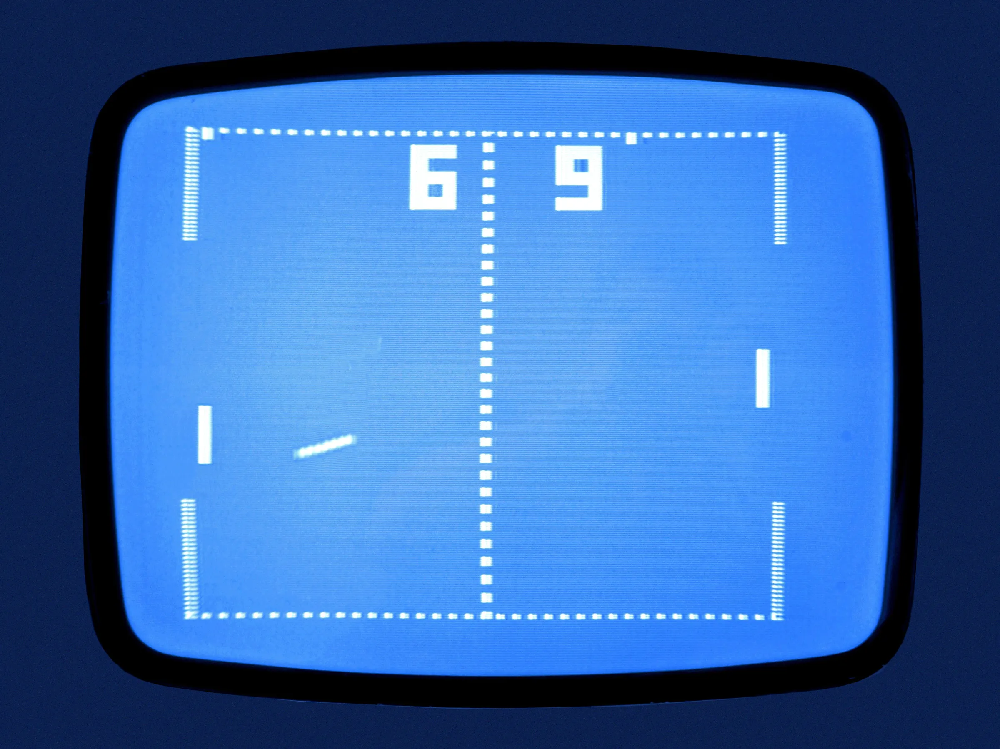

1970s-1980s: The First Generation of Consoles
 

The firm Atari was formed in 1972. Not only did the business dominate the video game market for the following decade, but it also created Pong, the first global hit. Pong's gameplay is extremely identical to that of its predecessor, Tennis for Two from 1958. Pong, is a game that consists of two players or a single player against a computer, which simulates back and forth ping pong until one of the two players wins by a higher amount of points.